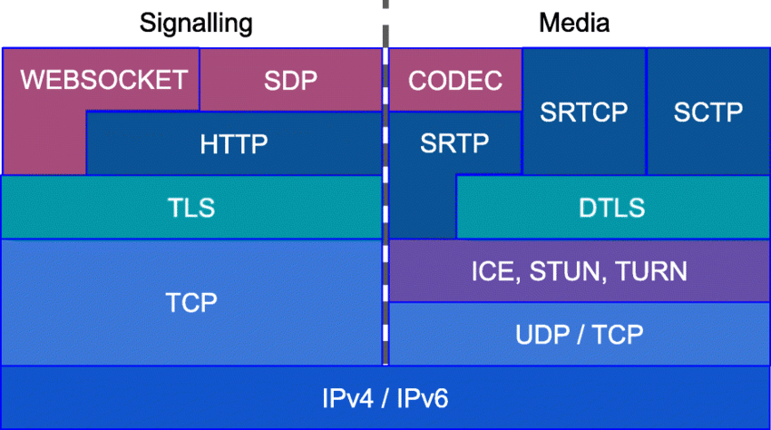

webrtc协议
参考文章
- rfc
- 给好奇者的 WebRTC
- 浏览器W3C的 WebRTC
- webrtc的sdp的字段解释
- RFC 标准分如下几类：
- ICE 协议相关部分，媒体描述，offer/answer 通信过程。
- P2P 穿越相关部分，主要是 STUN/TURN。
- DTLS 相关部分，主要是网络传输相关标准。
- RTP/RTCP/SCTP，主要是多媒体传输相关标准。
- 音视频传输：
- RTP传输流数据，基于UDP
- RTCP传输控制元数据，基于UDP
- （如果要加密传输，则通过DTLS加密成SRTP/SRTCP后传输）
- 应用数据传输：即datachannel
- 传输SCTP包，基于UDP
- （如果要加密传输，则通过DTLS加密后传输）
